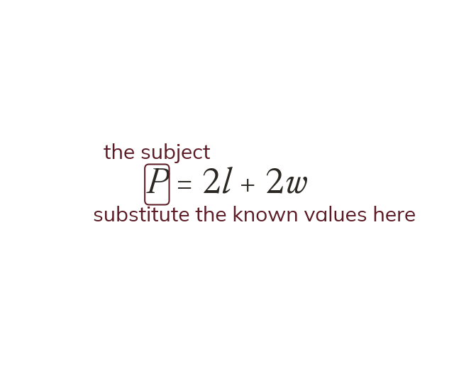

What a formula is
A formula is a rule relating variables, with one as the subject. Substitute known values for every other variable. That leaves an equation in the one unknown.
A formula is a rule relating two or more variables, with one written as the subject. Substituting known values into every other variable leaves an equation in the one remaining unknown.